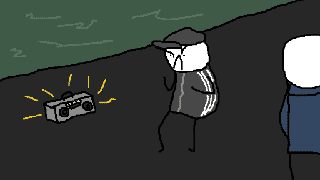

toreonify stories
tinkering with stuff
Projects bin
- TicTacToe in x86 assembly with simple AI and multiprocessing
- 8-bit computers restoration
- PS2 SMB server inside PS2
- Dreamcast GD-ROM laser amplifier
- AVR IDE drive emulator using SD card as storage
(soon!)
The One and Only
Stories about a graduated student from local university. Based on real stories, no joke. Exclusively in Soviet language.
Все совпадения с реальностью – случайность.
- Случайная встреча
- Кубик – в квадрат, шарик – в кружок
- Кавайный хип-хоп волшебника-недоучки
- Ябеда-корябеда, нахер линуксятину
Good ol' GIFs

© toreonify 2018 – 2019. twitter.